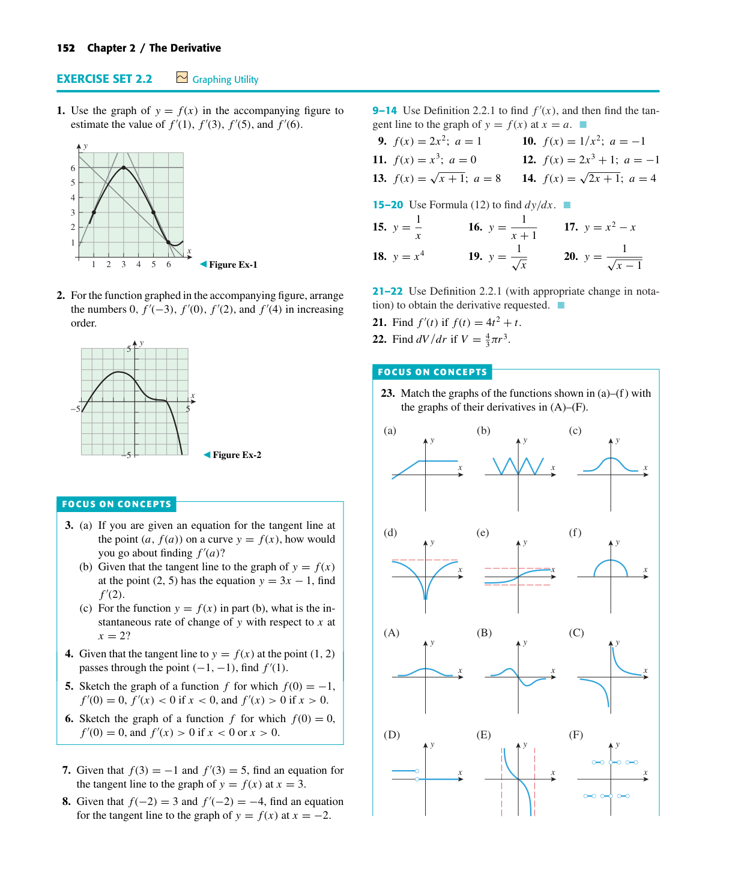

Unit 2
Chapter 2
Unit 2 · Chapter 2
2.2
The Derivative Function
Textbook: The Derivative Function
p. 152
0/8 done
Test on Chapter 2
p. 152
2
Question 2
For the function graphed in the accompanying figure, arrange the numbers 0, f ′(−3), f ′(0), f ′(2), and f ′(4) in increasing order. y 5 x −5 5 −5 Figure Ex-2 FOCUS ON CONCEPTS
4
Question 4
Given that the tangent line to y = f(x) at the point (1, 2) passes through the point (−1, −1), find f ′(1)
23
Question 23
Match the graphs of the functions shown in (a)–(f) with the graphs of their derivatives in (A)–(F). (a) y x
p. 153
41
Question 41
Suppose that the cost of drilling x feet for an oil well is C = f(x) dollars. (a) What are the units of f ′(x)? (b) In practical terms, what does f ′(x) mean in this case? (c) What can yo…
p. 154

Highlighted on textbook page 152.
· Pinch to zoom, double-click to fit